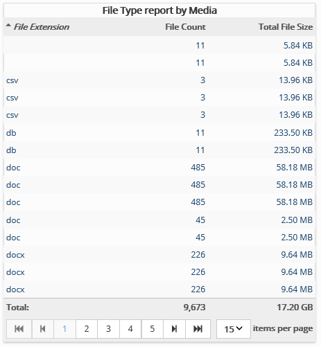

This report summarizes media file count and file size based on file extensions.
Complete the following selections:
Report Title: A report title is selected by default; change the title if needed.
Media: Select the media of interest.
